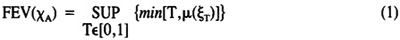

by Abraham Kandel
CRC Press, CRC Press LLC
ISBN: 084934297x Pub Date: 11/01/91
|
|
Fuzzy Expert Systems
by Abraham Kandel CRC Press, CRC Press LLC ISBN: 084934297x Pub Date: 11/01/91 |
| Previous | Table of Contents | Next |
Mordechay Schneider
Abraham Kandel
The expert system we describe here can be logically divided into three main parts:
The Front-End Compiler is a program that receives input data from the user, or any other connected software, and compiles it. During compilation the data is transformed into a format that is understandable to the inference engine. Following compilation the reformatted data is passed to the inference engine. The inference engine uses this data in conjunction with a knowledge base in the form of production rules.
The QAP has only one function — to trace a certain conclusion and show the user how this conclusion was reached (what rules and data participated in contributing to the drawing of that conclusion).
To see how an expert system might be made fuzzy it is first necessary to understand the properties of fuzzy logic and fuzzy sets which are applicable here. This work is divided into four parts. First we explain the concepts of the fuzzy expected value and the fuzzy expected interval and their properties, and then we describe the fuzzy expert system.
Fuzzy logic was introduced by Zadeh1 in 1965. The basic idea was to extend the classical logic (the Boolean logic) in order to relax the harsh constraint that everything that can be said about anything is either absolutely true or absolutely false. Zadeh suggests that it is possible to understand a statement as being 0.75 true (which could be interpreted as not really true) or 0.5 true (may be true), etc. The use of fuzzy numbers enable us to use fuzzy variables (which will be described in the next section). In 1978 a paper by Kandel and Byatt2 described a new concept for fuzzy average called the Fuzzy Expected Value (FEV). A description of the fuzzy expected value follows.
Let χA by a B-measurable function such that χA∈[0,1]. The fuzzy expected value (FEV) of χA over the set A, with respect to the fuzzy measure , is defined as

where ξT = {x|χA(x)≥T}.
Now, μ{x|χA(x)≥T} = fA(T) is a function of the threshold T.3 The function μ maps ξ into the interval [0,1].
The actual calculation of FEV(χA) consists of finding the intersection of the curves T = fA(T), which will be at a value T = H, so that FEV(χA) = H∈[0,1].4
Using the base variable old, assume a given population and a given subjective compatibility curve such that
As can be seen, we have five different thresholds (0.20, 0.30, 0.45, 0.55, 0.60). The first step in the process is to check how many people are above each threshold (in percentage terms). As can be seen, 100 people are above or equal to 0.2; 90 people are above or equal to 0.3; 75 people are above or equal to 0.45; 50 people are above or equal to 0.55 and 20 people are above or equal to 0.60.
Pairing the data and rearranging it by increasing order of the measure of belief, χs, we obtain the following five [χ,μ] pairs (see Equation 1):
Now, the minimum value of each pair is
and, therefore, following Equation 1, the FEV, which is the maximum of all these minima, is
max(0.20, 0.30, 0.45, 0.50, 0.20) = 0.50
Thus, the FEV is 0.50. From this result we can state that the fuzzy expected age is 50.
Next, we discuss the properties of the fuzzy expected interval.
The Fuzzy Expected Interval (FEI) was designed to handle cases where the FEV is not applicable. The application of FEI becomes useful when the data provided by the user to the expert system is fuzzy or incomplete. The following example illustrates the idea.
| Previous | Table of Contents | Next |